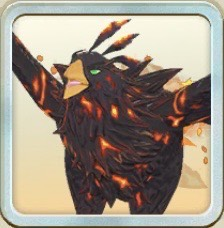

ビンチョー

超スタフェス限定ビンチョー
黒オーラ
創造
超スタフェス限定
主血統ヒノトリ
副血統レアモン
基礎データ
素質
ライフ+10%
ちから-10%
かしこさ+20%
命中0%
回避+10%
丈夫さ-5%
- 素質合計
- +25%
- 最高素質
- かしこさ +20%
特徴
ガッツ回復力A
移動速度B
成長タイプふつう
ヨイワルヨイ
サイズ大きい
適性データ
地形適性
砂漠B
森林E
海岸E
雪山C
火山B
- 得意（B以上）
- 砂漠B・火山B
- 苦手（D以下）
- 森林E・海岸E
間合い適性
遠A
中B
近E
零D
- 得意（B以上）
- 遠A・中B
- 苦手（D以下）
- 近E・零D
適性評価は当サイト独自の指標です。B以上は育成でSに届く適性、D以下はSに届きにくい適性として、高いランクを少し重く見て5.0満点で算出しています。
相性のいいアシスト能力
丈夫さの素質-5%がビンチョーの弱点。全種族魅了 IIでカバーしよう。
-
執事の心得・序
バトル開始時、ライフ以外のステータス<+5%>
[自身黒]この効果中、ライフ50%以上で技発動時、[有利以外]完全回避Lv2<1回>、[有利]完全回避Lv4<1回> -
シザースインサイト II
[自身赤または創造]次の効果を発動
[前半]残りライフが多いほど命中率上昇<最大+40%>
[後半]オーラ技発動時、必中Lv1<1回> -
全種族魅了 II
[自身黒][序盤]間合い適性に応じて最大ライフの割合で特殊ダメージカット
適性S以上SS未満：30%以上カット
適性SS以上M未満：20%以上カット
適性M以上：10%以上カット - ▲ 間合い適性S以上が条件。開始時の遠A・中Bなら、育成開始時の上昇でSスタートが現実的。
- 我が名を知るが良い IV [自身黒]<前衛>技命中時、次の技が必中Lv1<1回>
-
タナトスゾーン II
[自身黒]<オーラ黒>技命中後
次の技が必中Lv1かつ与ダメ上昇Lv2<1回>
※新しいカードの能力から並べています。